The Gist:
RJMetrics is a data analytics solution (now 2 distinct tools, Pipeline and CloudBI) that helps online businesses consolidate and visualize data for easy analysis/collaboration. When I first got to RJM over 3 years ago, the brand and design foundation were pretty much non-existent.
Our brand/style at the time looked like something out of a Microsoft PPT. I devised the cornerstone concept of using platonic solids as a representation and we built a brand around that we could all stand behind for years to come.
Project Goals:
- Establish a visual design language
- Represent a fun culture that knows how to be serious (about using data)
- Create a flexible, scalable mark to represent us
Output:
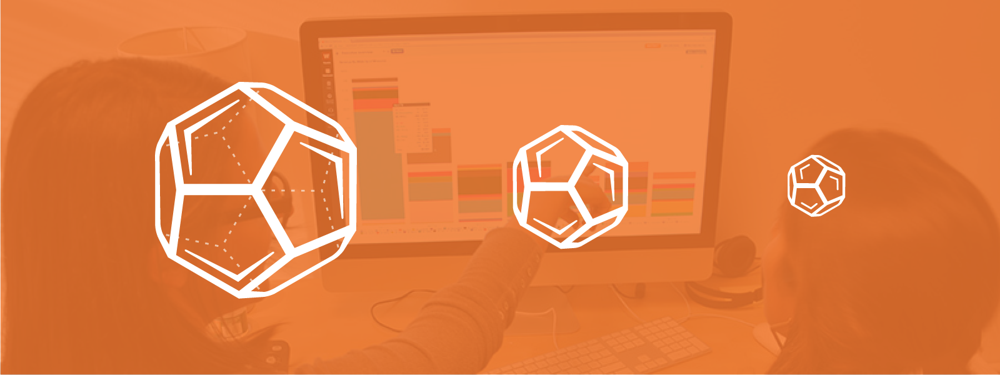 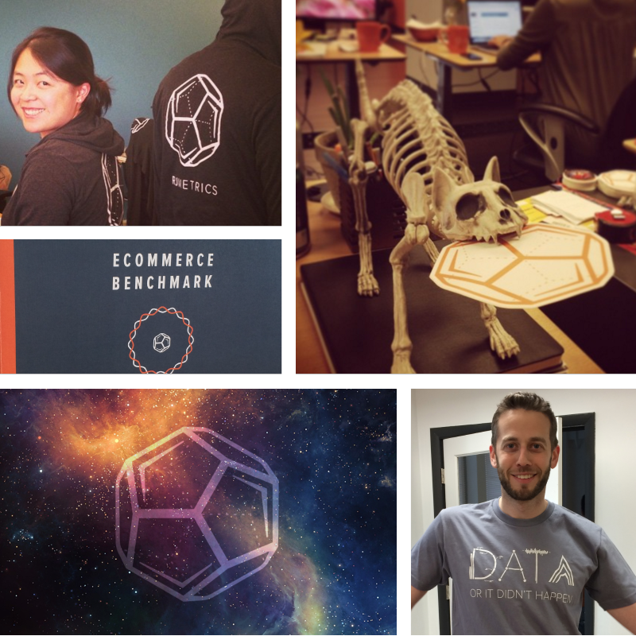 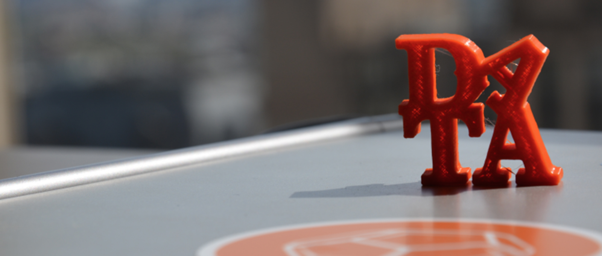Results:
- A clean/modern brand that made a professional impression
- A great genesis story and way to relate the brand to our team’s core values
- A foundational style-guide we could call our own and iterate on
My Role:
Lead Designer, Project Lead
 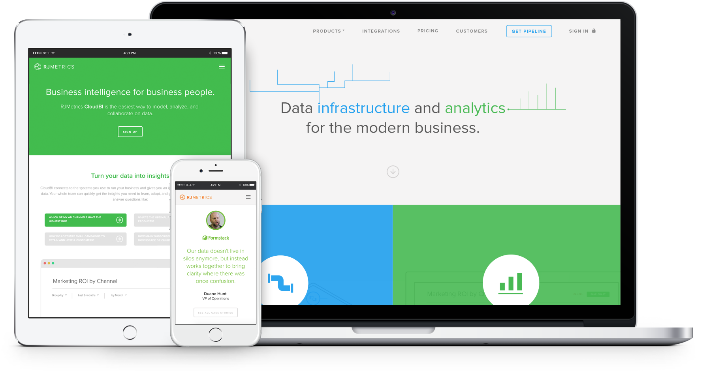
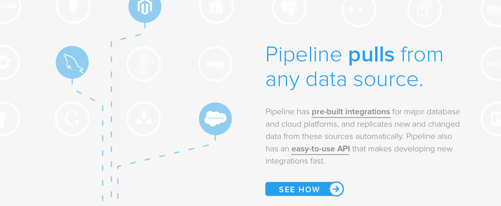
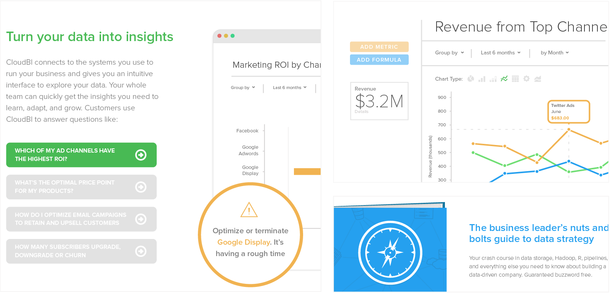
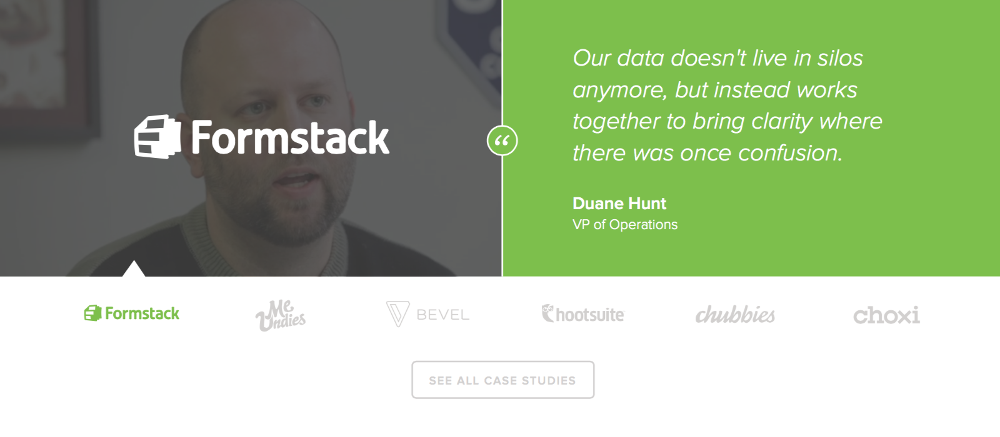
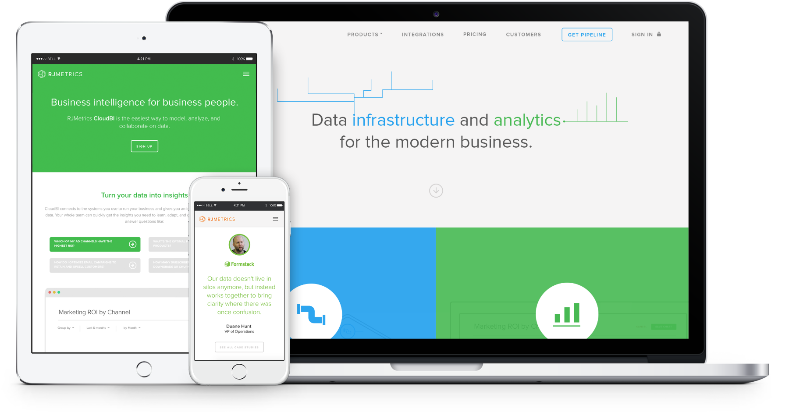
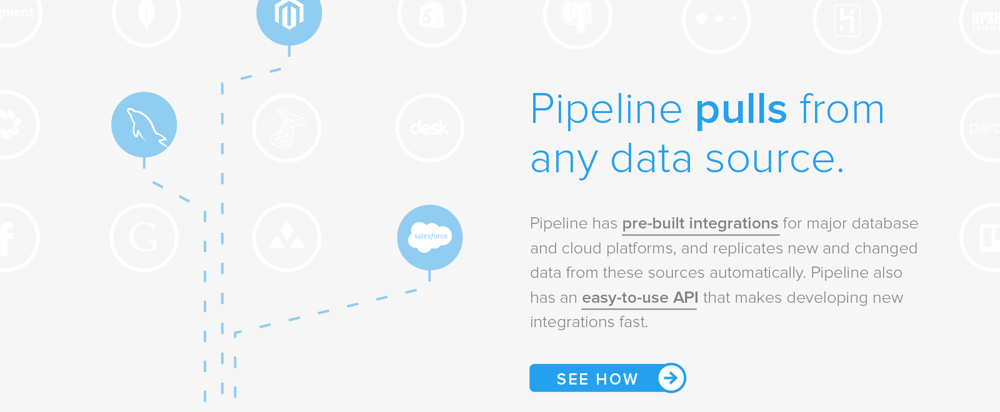
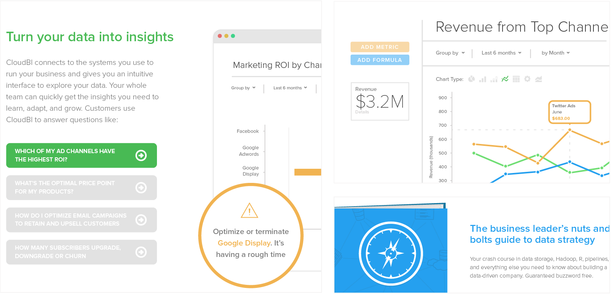
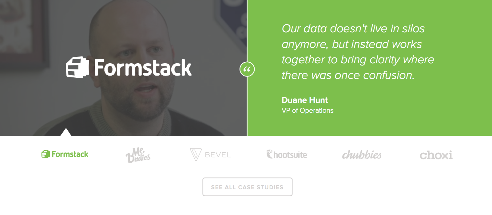
 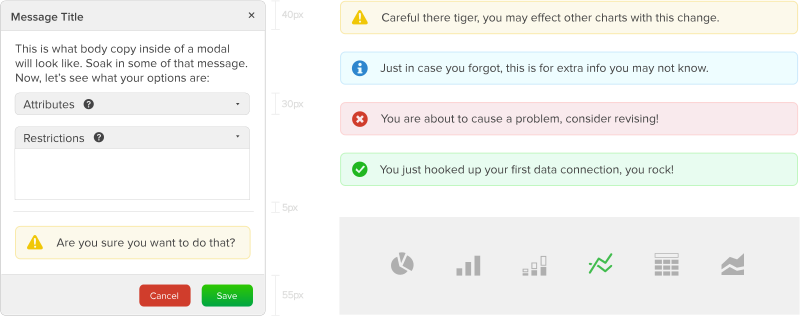
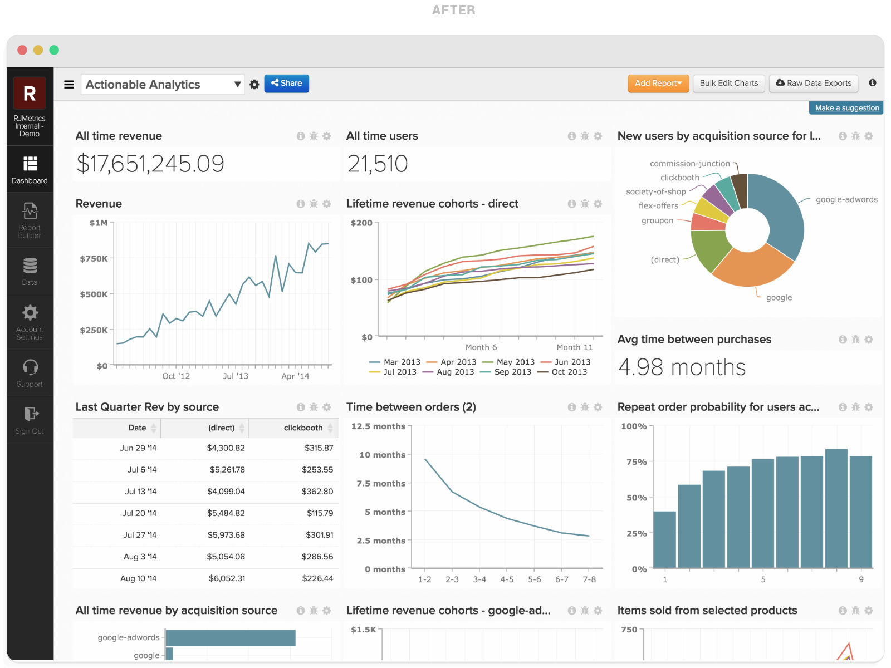
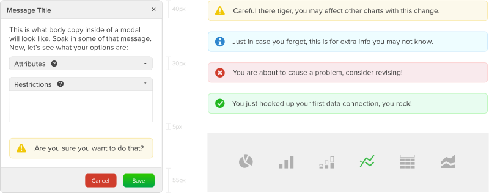
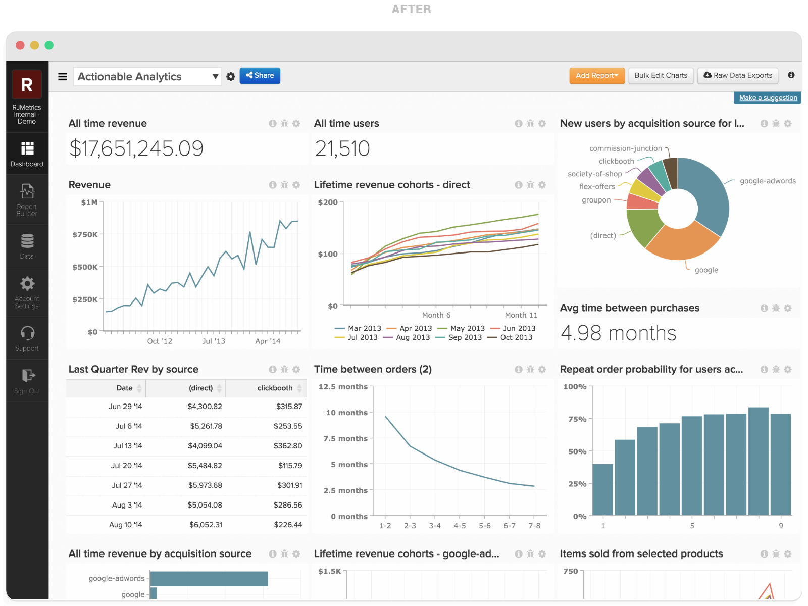